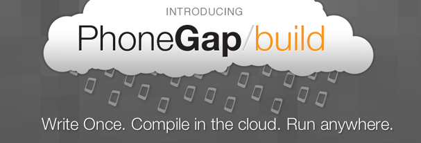

Sabre Mobility Day
PhoneGap!
Fil Maj
| z, ? | toggle help (this) |
| space, → | next slide |
| shift-space, ← | previous slide |
| d | toggle debug mode |
| ## <ret> | go to slide # |
| c, t | table of contents (vi) |
| f | toggle footer |
| r | reload slides |
| n | toggle notes |
| p | run preshow |
PhoneGap!
Fil Maj

team needs to have "jack of all trades"
mobile posed a huge opportunity, but Apple followed in MSFT's footsteps
explain bridge, this is the crux of what web devs want
shell per platform


James Pearce of Sencha
